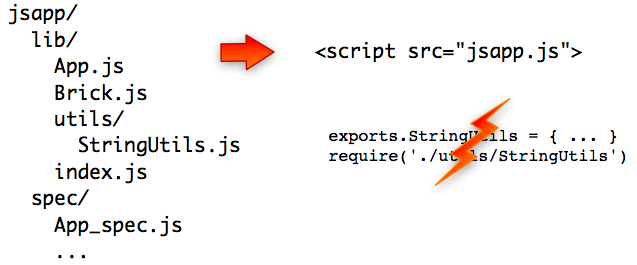

Do exports.XXX and require('./XXX') look painful?
Sometimes, you simply want to maintain your code source "as if it were in a single file" but still splitting different features in different files... In that case, you would like to avoid having to exports and require everything everytime.

This should only be used if your code 1) has no name clash accross different files and 2) has no particular dependency order.